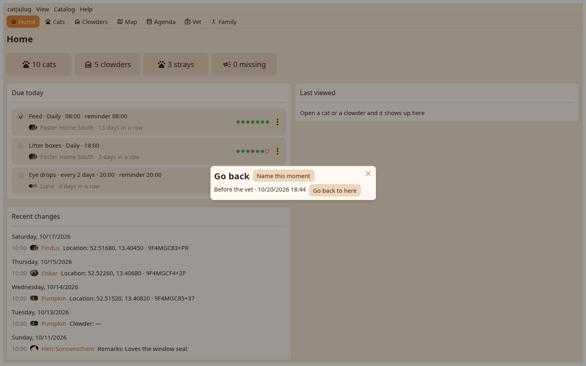

1. The moments
Every moment with its cause and the name you gave it. Go back writes everything after it to a file in your Downloads, then removes it.

A wrong import is undone by going back to the moment before it.
Every moment with its cause and the name you gave it. Go back writes everything after it to a file in your Downloads, then removes it.
